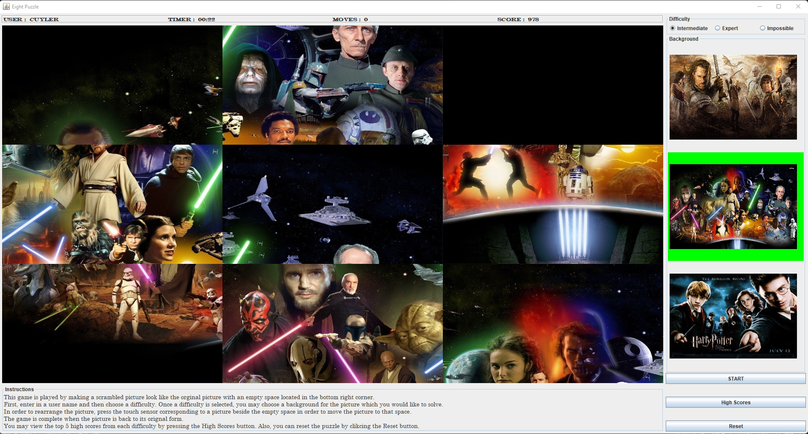
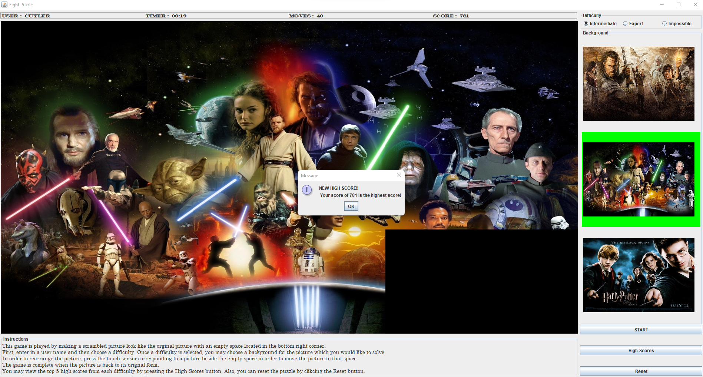

Below are some of the various programming projects I have worked on over the last few years.
This 8 - Puzzle Game was designed as the final project in my second Java course during my computer science minor. It was originally designed to receive input from Phidget touch sensors which were arrayed in a 3x3 grid. The user would touch the cell corresponding to which tile they would like to slide into the empty space and it would move. It also works by using the mouse to click on the tile. The game has three levels of difficulty and also assigns a score to each complete attempt based on time of completion and the number of clicks. The code can be accessed on my github here.
This is what a new game looks like. The tiles have been scrambled and the timer has started running and updating the score.
Once you have completed the puzzle, the game will compare your score with the high score file and notify you if you scored in the top 5.
This Jeopardy program was written as a means of playing trivia games with my family during the COVID-19 lockdown. It is written in Python. The program loads a Jeopardy game by reading data such as questions, answers, topics, etc. from a text file written in a certain format. You can specify any number of topics (columns) and any number of questions (rows) and you can assign questions to be daily doubles or not. The program will ask for how many users and allow you to assign names to the contestants. When a question is selected, the question displays but does not show the answer. The host can choose to allow the fastest person to answer or to allow all contestants to suggest an answer. Once the host has received potential answers, they can click to show the answer, and then award the points to those that got the question right. The program will keep track of the points as the game goes on. There is also the option of having a final jeopardy question whereby the contestants can wager their points. After this question, the person with the most points is announced as the winner. it can be accessed on github here.
Encrypt It is an iOS application I created as the final project in my Mobile App Development course in undergraduate school. The app would take any message and encrypt it via an Affine Cipher. You could then send the encrypted message to your friend and they could use the app to decrypt the message back into its original form. Unfortunately, I have lost the code for this program; however, below are some photos.